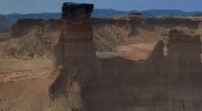

만약 Walt의 말을 기억하거나 믿는다면 버튼을 한 번 눌러 보아도 좋다.
나는 로드 무비를 싫어한다. 신도시 아파트가 나와 내 가족을 그렇게 만들었다. Mojave 사막에서 나는 어디로 진전하지도 못하고 계속 같은 자리를 맴돌 수밖에 없다. 그 이유로서는 내가 운전 면허 소지자가 아니기 때문이다. 방향 감각의 미숙함은 영화가 나오는 스크린을 보고 있는 눈에게 상당히 큰 영향을 미친다. Travis는 길을 잘못 들었지만 끝내 스스로 떠날 수 있는 자였는데, 그의 방향 감각은 몸을 지배하고 있어 더이상 검증의 대상조차 아니기 때문이다.


이것은 Idaho에 있는 도시 Paris의 푯말이다. (사진 출처: https://fsgworkinprogress.com)
텍사스의 명물은 푸른 하늘이다.

2006년의 나는 텍사스 하늘을 흉내낸 벽지가 시공된 방을 가지고 있었다.

(출처: '도배사 웅탱이'님의 다음 블로그, http://blog.daum.net/uuung73)
나는 아직도 그 벽지와 타일과 몰딩 카탈로그 앨범을 기억한다. 그것을 훑어 보는 우리 부모님의 비전은 다음 중 하나였던 것 같다.

ⓐ (출처: "Disney 굿다이노 가족을찾아서 천연펄프 벽지", 홈앤톤즈 제공)

ⓑ (출처: "포토벽지-17PH244 시공 Timespace 하늘 천장 (by Skitterphoto)", 내추럴이미지 제공)
내 초등생 시절 기억은 말이지, 무섭게 사적 영역을 침범하는 어리숙한 어른들에 대한 조각으로 연명하고 있는데, 팔촌 당숙의 고모의 누나의 딸이라던 어느 '고모'는 한 번 하늘을 보자고 말하더니 흰색인데 앤티크 양식을 보여 주고 있는 침대 프레임 위에 벌러덩 누웠다. 분명히 나는 문을 잠그고 방 안에 스스로 격리되어 있었다. 고모는 봉투에 담긴 만 원을 용돈으로 두고 가시었다.